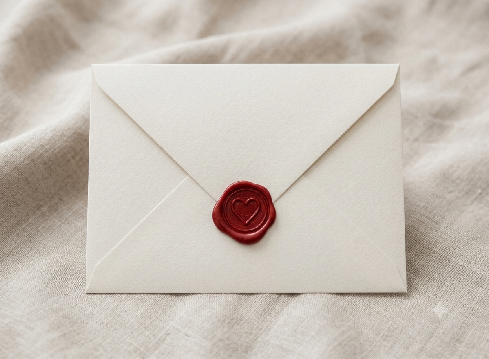
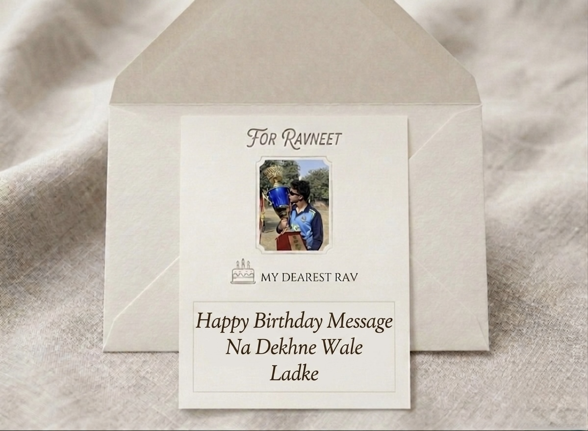

Honestly, that number feels strange because in my head you’re still the guy who thought my account was fake.
It’s funny how life works. A random accident, one unexpected conversation, and somehow a bond neither of us ever planned for. If someone had told me back then that this person would become so important to me, I would’ve laughed and said, “Bilkul nahi.”
But I guess that’s the thing about life. And maybe that’s the thing about God’s plan too.
Some people walk into our lives with an announcement. Others just appear quietly and somehow become a part of our everyday thoughts, prayers, and smiles. You became one of those people for me.
Somewhere between all our conversations, your jersey number 18, your impossible-to-keep-alive phone battery, and your endless support, you became someone I genuinely cherish.
Rav, I don’t think I’ve ever told you this properly, but I’m so proud of you. Proud of the cricketer you are becoming. Proud of the discipline people don’t see. Proud of the effort you put in when nobody is clapping. Proud of the person you are behind all of it.
You have this habit of showing up for people even when you’re carrying your own struggles, and that says so much about your heart.
Sach kahun, every time you talk about cricket, your dreams, your matches, I can see how much it means to you. And whether it’s a good day or a difficult one, whether it’s a century or a lesson disguised as a setback, I’ll always be proud of the fact that you keep going.
Tu bahut door jayega, Rav.
And when you do, I hope you remember there were people cheering for you long before the world knew your name.
And if your phone battery survives long enough to read this entire letter in one go, then congratulations—today’s birthday miracle has officially happened. But honestly, the bigger miracle was us.
Rab di marzi ajeeb hundi hai na? Out of billions of people in the world, somehow our paths crossed. And Rav, I’ll always be grateful that they did.
Some meetings are written softly, Not in stars loud enough for the world to see, But in quiet corners of destiny, Where two strangers become a memory they never expected to keep.
Maybe that’s why you feel special to me. Because you weren’t a wish I made, or a dream I spent nights chasing. You were a chapter that arrived unannounced, and somehow became one of my favourites.
Years from now, when time has carried us far from this moment, I won’t remember every conversation word for word. But I’ll remember how you made me feel—Seen. Supported. Understood.
And in a world where people come and go like seasons, That is no small thing.
Thank you, Rav. For the support. For the laughter. For the comfort. For the patience. For being one of the sweetest souls I’ve ever met.
I hope 19 brings you everything you’ve been working for. I hope your prayers are answered. I hope your hard work pays off. I hope jersey number 18 creates memories you’ll tell stories about one day. I hope your heart stays kind. And I hope life is as gentle with you as you’ve been with the people around you.
Once again Happy Birthday mere gods plan ❤️🩹
You’ll always be one of my favourite people and one of my favourite blessings.
Te haan… phone charge kar liya kar. 😭❤️
Always cheering for you🥰
Aarika💋